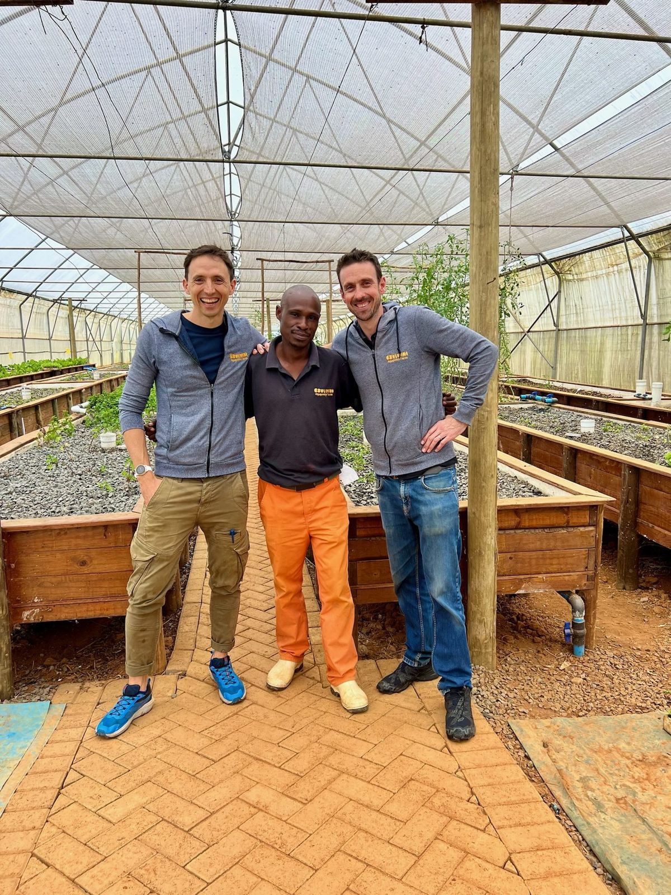
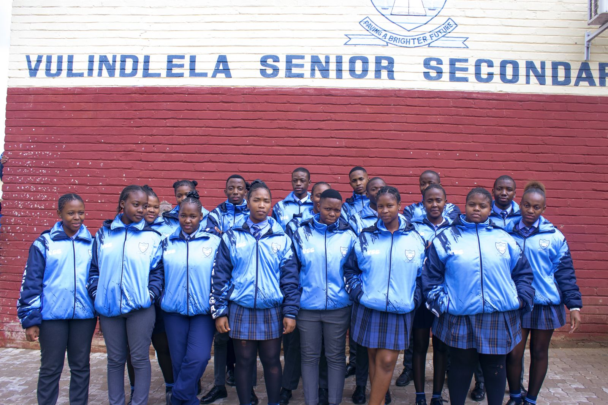
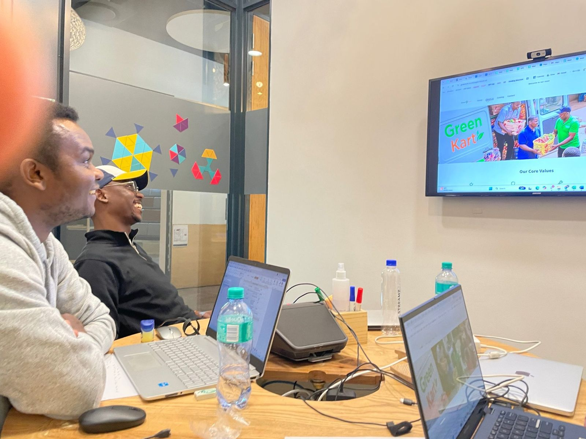
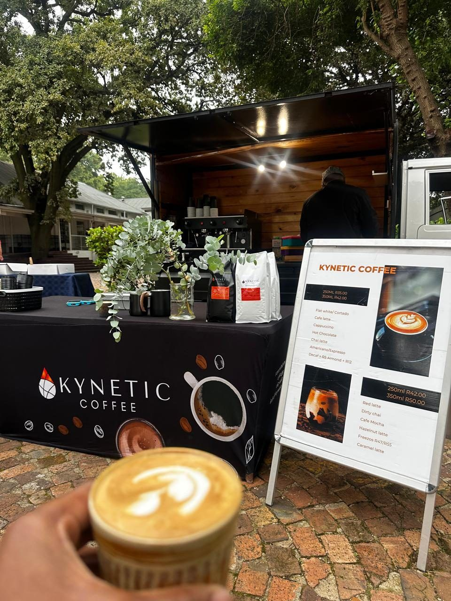
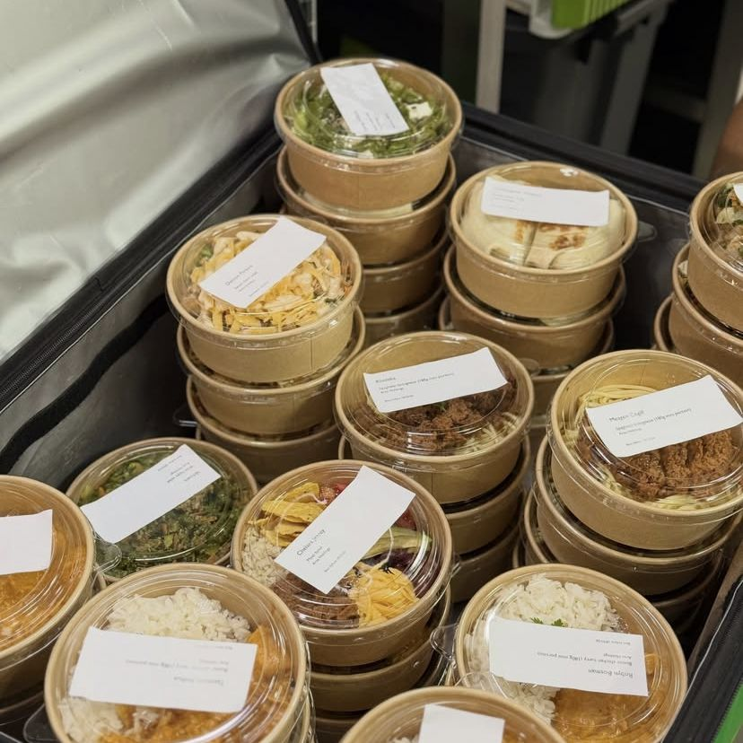

Ready for growth capital
Ezulwini
Controlled-environment farming that makes commercial farm ownership repeatable for first-generation farmers.
R1.44mrevenue, FY26
50+graduates trained
7jobs

Each company is run by its founder. We hold a significant minority for the long term and work inside the business on accounts, people, growth and tech.

Controlled-environment farming that makes commercial farm ownership repeatable for first-generation farmers.

Quality, locally made school uniforms for township schools in Kabokweni, Mpumalanga.

Fresh produce from small-scale farmers to informal traders, piloting in Gauteng.

A founder-built roastery and coffee shop in Linden, Johannesburg, with an events cart.

Healthy meals for workplaces and schools, built over 12 years in Cape Town.
Tracked alongside commercial performance. We lead with durable businesses; the social outcomes follow from them.
Businesses started and sustained.
Good, lasting jobs, with a target of 10 or more per business.
Founder and employee ownership.
People trained and promoted.
Only a viable business sustains the rest.
| Ezulwini | More than 50 graduates through training, with SAQA accreditation in progress. |
|---|---|
| Uniformitys | Learners trained daily in the workshop. |
| GreenKart | First-time employees building trade experience. |
| Pure Good Food | Seven YES graduates in 2026. |